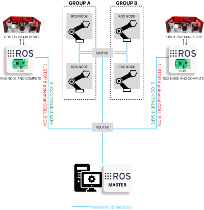
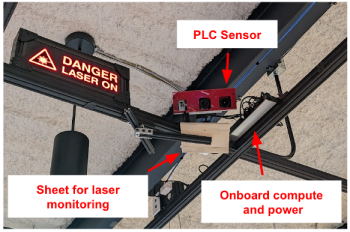

Safety Light Curtains
System Overview

We have two downward-facing PLCs mounted on a 80/20 grid that is attached to the ceiling at a height of 3.35m from the ground. Each PLC has a Raspberry-Pi 4 onboard which runs all the code for designing and imaging the light curtains. The total dimensions of the testbed are 9.3x5.9 m2 and all the communications are carried over ethernet to avoid latencies. The pose between each robot and PLC is calibrated with an eye-on-base calibration procedure using Apriltags.

Research Paper(s)
As factories continue to evolve into collaborative spaces, with multiple robots working together with human supervisors in the loop, the problem of ensuring safety for all actors involved becomes critical. Presently, laser-based light curtain sensors are widely used in factories for safety monitoring. While these sensors have high accuracy standards, they are difficult to reconfigure and can only monitor a fixed user-defined region of space, and are typically expensive. We leverage a recently-developed controllable depth sensor, Programmable Light Curtains, for building an inexpensive and flexible real-time safety monitoring system. This system can project tight dynamic safety envelopes that enables fence-less human-robot collaboration, can scale to monitor multiple robots with few sensors, and by utilizing each sensor as a 3D depth sensor the system can also monitor the entire scene within its field of view. We deploy this system in a real testbed environment with four robot arms and demonstrate its capabilities as a powerful safety monitoring solution while being significantly cheaper and not compromising on accuracy.